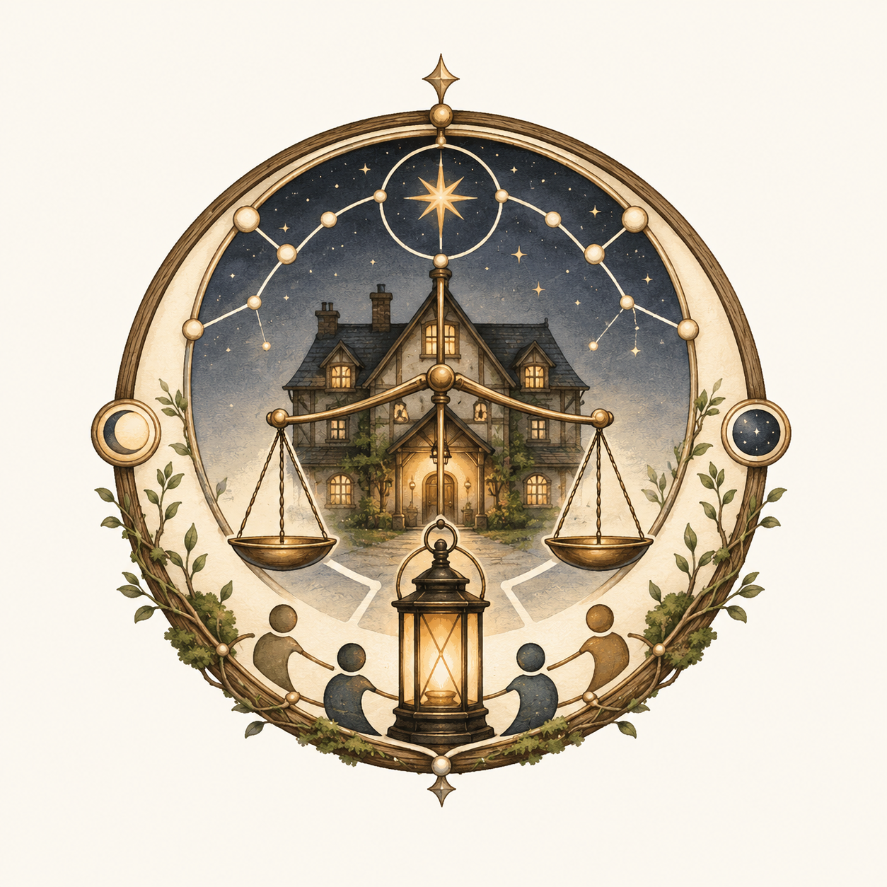

Equilibrium Inn Observatory
A living observation cockpit for Equilibrium Engine behaviour.
an instrument, not a game
What this is
This is an
observation and validation instrument — not a game. It runs a
small living world (a roadside inn of seven characters over three in-world days) on the
Equilibrium Engine and lets you watch, at the society level, whether NPCs:
- grow bored, seek activities, become busy;
- tire during activity, rest, sleep, and recover;
- retain slower memory, and react socially in bounded, explainable ways —
each incident traceable to its cause.
There are no quests, goals, score, or progression — only observation and causal tracing.
The static Observatory is a self-contained, deterministic export — the
blessed fallback. The live cockpit runs the inn in your browser via Pyodide;
its Verify parity button checks, in-browser, that Pyodide reproduces the CPython
reference byte-for-byte. Until that check passes, the static export is authoritative.
The cockpit has two tabs over the same live run: the Observatory and
Time plots — raw interior-state trajectories for studying the engine's
dynamics (fast affect spikes that vent within hours, and the slow relational marks that persist).